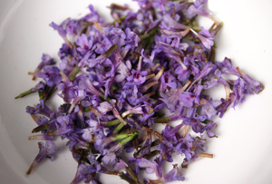

Le lierre terrestre, qui ne paye pas de mine à hauteur d'homme, peut être confondu, par la couleur violacée des ses fleurs, avec le lamier pourpre ou le bugle rampant. Toutes les trois partagent d'ailleurs la même famille, qui se caractérise notamment par une tige carrée et des feuilles opposées-décussées. Ce dernier terme signifie que les paires de feuilles se positionneront successivement sur la tige avec une rotation de 90°. Vues de haut, elles formeront donc une croix. Ces trois plantes sont comestibles, la dernière possédant un étonnant goût de champignon.
Vues de près, ou à la loupe, les petites fleurs du lierre terrestre dévoilent toute leur splendeur. Avec leurs deux grandes lèvres, elles feront facilement penser à ces orchidées qui décorent les vitrines des fleuristes.
Le lierre terrestre était autrefois un condiment apprécié, aujourd'hui tombé en désuétude. Son parfum particulier, à la fois boisé et parfumé, relève cependant agréablement les salades, les soupes et bien d'autres préparations. On lui préfère aujourd'hui des saveurs plus accessibles telle que l'origan, encore une cousine de la famille des lamiacées.
Son parfum de sous-bois, qui peut étonner de premier abord, se marie particulièrement bien avec le champignon. Ensemble, ils donnent une soupe aux saveurs envoûtantes qui ne manquera pas d'épater vos convives.